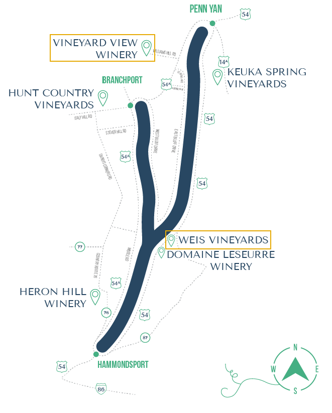

Map of May’s Point Pool at the Montezuma NWR.
This year, our family decided to vacation at Keuka Lake, located in the Finger Lakes region of upstate New York. Known for its distinctive Y-shape, Keuka is unique among the Finger Lakes in that it’s the only one that drains into another (Seneca Lake). It does this through the Keuka Lake Outlet waterway, which also has an accompanying hiking trail.

The lake is also known for its wine trail, a collection of wineries that specialize in cool-climate varietals well-suited to the region. During our visit, we made stops at a few member wineries including Vineyard View Winery and Weis Vineyards.
Vineyard View Winery sits on a hillside with nice views of the lake, and their tasting menu highlighted a range of varietals from dry Riesling to Cabernet Franc (our favorites). The overall setting made for a quiet, unhurried tasting experience.
Weis Vineyards, located just on the other side of the lake from Vineyard View, offered something different. Founded by winemaker Hans Peter Weis, Weis Vineyards uses a more traditional German winemaking technique. The setting at Weis felt more modern (design wise) and a bit more commercial, but offered beautiful views of the lake and a welcoming, laid-back atmosphere.
On our way home, we made a stop at the Montezuma National Wildlife Refuge (NWR) to spend a few hours birding. We started with the 3-mile wildlife drive, which was a great opportunity to peep some waterfowl and wading birds. Although, they were drawing down the main pool (a regular part of marsh management) so birding wasn’t as good as I had hoped. From there we continued on to May’s Point Pool in hopes of spotting some black terns. I’ve been trying to see black terns for a while now with my first attempt a few years ago at Missisquoi NWR in northern Vermont coming up empty. This time, I was optimistic.